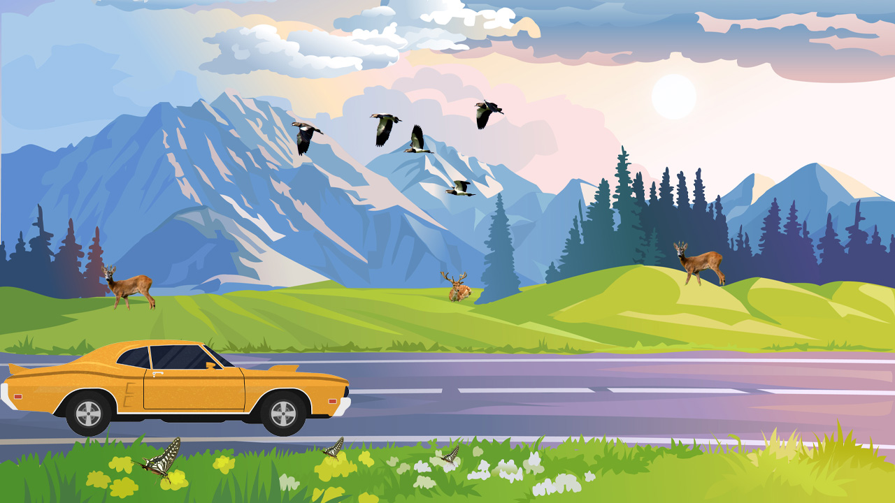

Design Process Image
This image shows the background design used in the animation. It was created and edited using Adobe Photoshop and Illustrator before being imported into After Effects for motion.

Click icon below to visit my animation